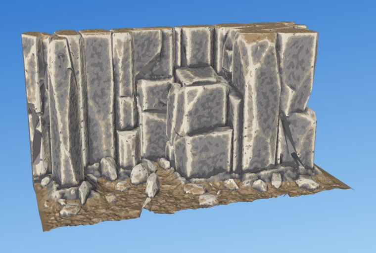
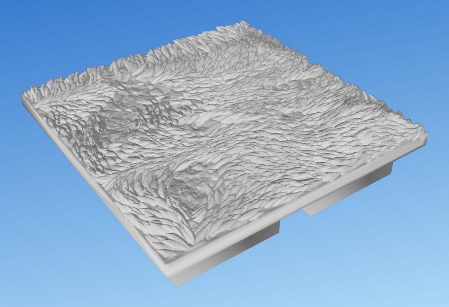
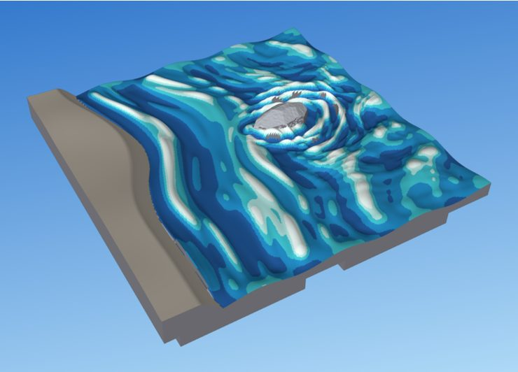
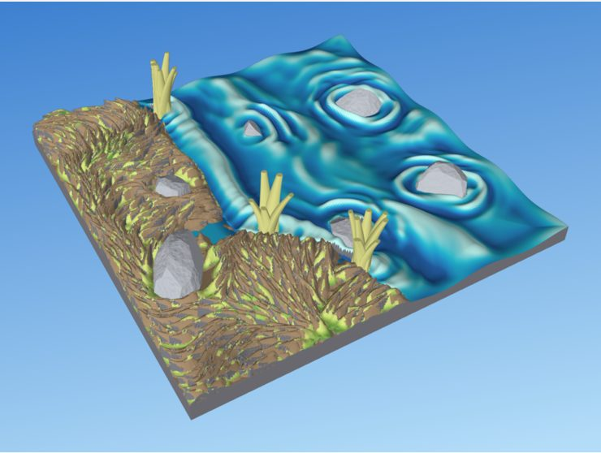
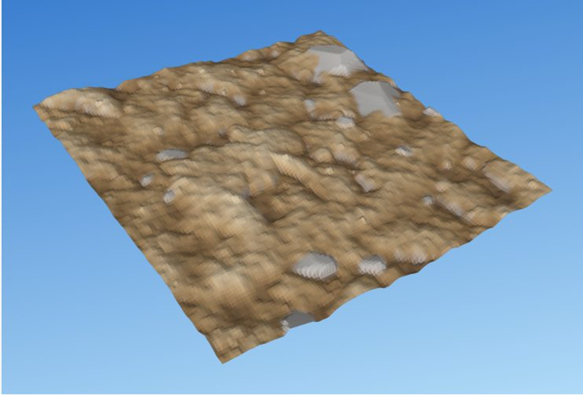

Page 1 of 11 · groundwork for the Rust rewrite · revisions 2 and 3, 1 Nov 2026 · analysis only, no code
Few mechanisms, many tiles
I read the dharmatiles library (20.6k lines), all seven labs (8.6k lines), every surface variant in git history, the language design conversation and the memory notes of Shawn's rulings, then had each claim checked against the code. Everything that looks good is built from about twenty shared operations, which today are written about seventy different ways. The proposal: tiles are short declarative documents that name built-in looks, and a Rust engine implements each look once, on those shared operations.

clifflab

grasslab

waterlab

shorelab

dirtlab
Where things stand
Loading live status…
Revision 2. An adversarial review checked this analysis against the code and the conversation. It changed the architecture: documents no longer call engine verbs, the verb set was corrected, water now covers the whole tile, units follow Shawn's ruling, and a Rust feasibility page was added. Every change, with its evidence, is in the change log.
Revision 3: project layout. A new page lays out the Rust repository: one Cargo workspace at the repo root beside the untouched Python, six crates instead of the fifteen sketched in revision 2, one dharmatiles program with subcommands (including the MCP server), a Tauri GUI that shares its web front end with a browser preview, the tile library as KDL files embedded in the program, and output in out/.
Revision 4: project plan. Shawn accepted the revision 3 recommendations. A new page turns them into a phased plan: spikes, a walking skeleton with a parity harness, look-by-look ports judged against the labs over four seeds, a library cutover before the cliff, three work streams, about 32 weeks on the critical path, kill criteria and the first two weeks task by task. The research notes are now one HTML page, and every Claude-written document here is HTML.
Top findings
The labs set the look now, not the library. Library grass is a thatch wrapper that ignores the species and placement arguments all 30 grass specs pass (scatter/prototype.py:121-138). Library stones are a separate "aged" pipeline from rocklab's facets. Port the labs first, and port the library only where no lab exists yet: regions, walls, trees, bases.
Each approved look is its own solver, built from shared parts. Writing the labs as compositions of seven verbs needed 7 to 11 extra constructs per lab, so the verbs move inside the engine. Documents name a look and tune it with natural controls, such as meadow bare="20%". The engine implements each look once, using about twenty shared operations.
Every look still follows one recipe: a large form, then a mid-scale structure (flow, cracks, facets, wave sources), then fine grain. Printability is built in at each step, and one audit at the end acts as a gate. The cliffs show why it must be a gate: round 11 still has 1–13 mm² of overhang per tile and some see-through gaps.
The newest variants win by building things the way the result is made. Grass is built in printed lines and layers. Cliffs are stacked under gravity. Fieldstone draws the cracks first. Water comes from wave sources. Leaves saturate a unioned surface.
"Plan, then build" solves the ordering the labs needed. Rocks in a meadow must claim footprints before the grass and be seated after it. First every entry decides where it goes; then everything is built, bottom to top.
Heightfields carry most of the work; meshes and booleans do the rest. Booleans are used freely inside a look (the cliff does hundreds). Solids are combined into one mesh once, at export. 2D polygons matter more than the first draft said: footprints, crack networks, wall outlines and the base logo.
Duplication, counted (library plus labs): about 15 noise sites using 5 algorithms, 9 seed schemes, 16 inline fades in the library alone, 12 point samplers, 6 grid-stamping routines, 6 rounding methods, 3 heightfield meshers on 3 grid conventions, 3 crack generators, 3 float32 export checks, 3 paint simulators. Overhang checks: 2 real audits in the library and 3 lab copies.
The library's shared state causes real bugs.displace_terrain resets the support grid and erases earlier stamps (core/tile.py:137). Every Boundary layer receives every boundary cell (terrains/tile.py:376,399), and seeds carry no layer identity, so ten water tiles add their soil and stones 2–4 times over. Walls ignore the tile seed and their region.
The real tuning surface is hidden: 233 module-level constants, labs that monkeypatch each other's globals, positional seeds kept aligned with dummy draws, and random draws that depend on grid resolution. That last one is why the OpenLOCK build is a different tile, not a rescaled one.
Shawn's language model holds, applied more strictly. One definition form; regions only from lines and fill points; fractions for every length (squares across, h up); water over the whole tile; seeds by path. The first draft broke several of these rulings without saying so; revision 2 restores them.
Rust is feasible. Manifold has a maintained binding and a credible pure-Rust port. The large speedups are in grass (parallel blades) and cliffs (adaptive heightfields), not in booleans, which Python already runs in C++. Six risks need spikes first.
Do print-scale details scale with the square? Taken literally, "everything with virtual fractions" makes an OpenLOCK build's rocks, blades and grain 27% smaller than DungeonBlocks'.
How identical must two builds be? Byte-identical on one machine is cheap. Across Mac and Linux it costs speed.
Acceptance test for the port: your side-by-side render review over four seeds, plus numbers that must hold (watertight, overhang area, see-through holes, bare fraction)?
Where do new looks get invented after the port: Python labs as the design bench, or Rust once hot reload exists?
Is "plan, then build" the answer to your lazy-model question?
May a definition add outside its region but remove only inside it? And where does z = 0 sit for OpenLOCK?
Labs first and the cliff last? Without the library's soil, grass carpet, thatch and water.
KDL instead of the YAML-like sketches? It keeps comments when the GUI or an agent edits a file.
Repository layout: Rust at the repo root beside the Python, out/ instead of stl/, your tiles in ~/Documents/dharmatiles, licence, crates.io or not. Nine short questions are on the layout page.
Source notes
The notes behind these pages are on the research notes page, with their source citations and dates. Everything is in docs/analysis/rust-rewrite/ as HTML, with images under img/. The one markdown file left is input-language-design-conversation.md, Shawn's pasted design conversation.